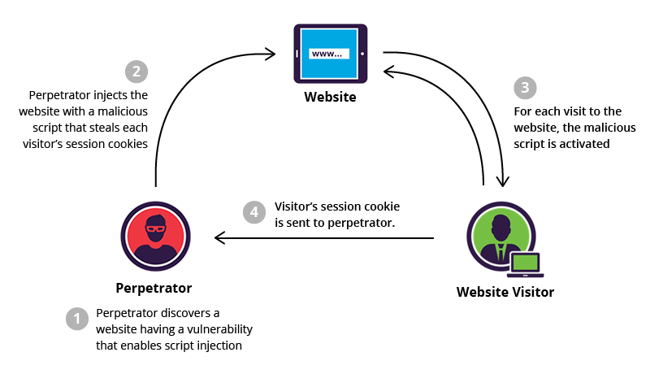

1. What is XSS? Cross Site Scripting (XSS) is a vulnerability in a web application that allows a third party to execute a script in the user’s browser on behalf of the web application. Cross-site Scripting is one of the most prevalent vulnerabilities present on the web today. The exploitation of XSS against a user can lead to various consequences such as account compromise, account deletion, privilege escalation, malware infection and many more.

2. Impact of XSS: XSS attacks can steal user data, hijack sessions, or redirect users to malicious websites.Denial of Service (DoS)
Attackers can exploit XSS vulnerabilities to launch DoS attacks by injecting scripts that consume resources, slow down the system, or crash the page. This could make the website unavailable to legitimate users.
3. Types of XSS: There are three types.Reflected XSS Also known as non-persistent XSS, this type of attack occurs when a malicious script is injected into a request or URL and then reflected back to the user's browser. Stored XSS
Also known as persistent XSS, this type of attack occurs when a malicious script is permanently stored on the target server. DOM-based XSS: This type of attack occurs when the attacker manipulates the document object model (DOM) of the user's browser.
4. Prevention Measures: Sanitize inputs
Check, filter, and sanitize user input to ensure it doesn't contain malicious scripts.
Use Content Security Policy (CSP)
This browser-side approach lets you create lists of access permissions for client-side resources.
Use HTML sanitization
This strips dangerous HTML from a variable and returns a safe string of HTML.
Use HTTPOnly cookies
This prevents JavaScript from reading the cookie's content, making it harder for an attacker to steal the session.

5. Secure Practices: Use secure coding frameworks, keep software updated, and educate developers about secure practices.Output encoding: This process converts harmful characters in user-generated content into HTML entities.Blacklist HTML tags: Blacklist HTML tags that are at risk, such as the iframe, link, and script tags.
Prevent client-side scripts: Prevent client-side scripts from accessing cookies.
Regular security audits: Continuous monitoring and periodic security audits are essential for maintaining the resilience of web applications.
6. XSS Attack Examples: XSS attacks can appear as seemingly harmless actions, such as clicking a link or submitting a form. They often exploit unfiltered user input.1: Cookie Grabber
If the application doesn’t validate the input data, the attacker can easily steal a cookie from an authenticated user. All the attacker has to do is to place the following code in any posted input(ie: message boards, private messages, user profiles).Error Page Example
Let’s assume that we have an error page, which is handling requests for a non existing pages, a classic 404 error page. We may use the code below as an example to inform user about what specific page is missing.
7. Importance of Input Validation: Properly validating user inputs is one of the best defenses against XSS. It ensures only trusted data is processed.One of the most effective ways to prevent XSS vulnerabilities is to ensure that all user inputs are validated. Input validation involves checking user-provided data against a set of rules (e.g., rejecting special characters or using whitelists). This helps to prevent malicious code from being executed by stripping out harmful content, such as script tags or JavaScript event handlers, before the data is processed.
8. Content Security Policy (CSP): A well-defined CSP helps block unauthorized scripts from being executed on your website, mitigating XSS risk.Implementing a Content Security Policy (CSP) is a powerful measure to reduce the risk of XSS attacks. CSP is a browser feature that helps prevent malicious content from being executed by restricting the sources of scripts that a website can load. It allows web developers to specify which domains are allowed to load resources like JavaScript, images, and CSS. By enforcing strict CSP rules, you can mitigate the risks associated with XSS.
Leave a Comment
Comments: